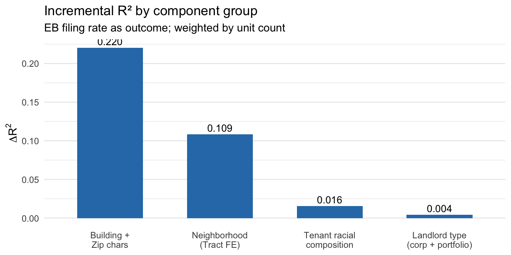

| Stage | Count |
|---|---|
| Phase 1 entities (RTT exact-name) | 451,346 |
| OPA-only entity additions | 262,935 |
| Total entities | 714,281 |
| Unique mailing addresses in graph | ~111,865 raw pairs |
| Registered-agent addresses dropped (>300 entities each) | 44 |
| Entities entering mailing-address graph | 64,461 |
| Conglomerates formed | 49,651 |
| Multi-entity conglomerates | 3,063 |
| Phase 1 entities merged by Phase 2 | 4,464 |
| Name lookup entries (all sources) | 719,215 |
Filing Rate Decomposition and Back-Rent Analysis
Philadelphia Evictions, 2011–2019
Overview
This report summarizes two analyses of the Philadelphia eviction court record (2011–2019):
Entity consolidation (
build-ownership-panel.R): A two-phase owner linkage pipeline that maps RTT transfers and OPA parcels to legal entities and conglomerates.Filing rate decomposition (
analyze-filing-decomposition.R):- Part A: What fraction of cross-sectional variation in building-level filing rates is attributable to building characteristics, neighborhood, tenant composition, and landlord type?
- Part B: Do corporate or high-filing landlords file evictions with less accumulated back rent? Is the plaintiff (often a management company) different from the owner?
Part 0: Entity Consolidation
Phase 1: Exact-name matching
Phase 1 (build-owner-linkage.R) normalizes raw owner names from RTT transfer records (stripping entity suffixes, roman numerals, trailing numbers) and groups exact-match normalized names into entities (entity_id).
Phase 2: Mailing-address linkage
Phase 2 (build-ownership-panel.R) uses 2024 OPA parcel data to build a bipartite graph linking entities to normalized mailing addresses. Connected components form conglomerates — economically related entities operating under different legal names but sharing an address.
The dominant registered agents detected are all variants of SIMPLIFILE LC E-RECORDING (a digital deed filing service), each linked to 1,700–2,100 distinct entities across five Philadelphia zip codes. These are correctly identified as commercial intermediaries, not economic affiliates, and all 44 such addresses are dropped before graph construction.
Coverage of the PID × year panel
| Metric | Value |
|---|---|
| PID × year panel rows (583,969 PIDs × 24 years) | 14,015,256 |
| Rows with RTT-sourced owner | 5,128,881 (36.6%) |
| Rows with OPA-fallback owner | 8,886,375 (63.4%) |
| Entity ID coverage (all years) | 14,015,256 (100%) |
| Portfolio bin: single (1 PID, 2011–2019) | 3,522,595 (43.9%) |
| Portfolio bin: small (2–4 PIDs) | 981,376 (12.2%) |
| Portfolio bin: medium (5–19 PIDs) | 425,827 (5.3%) |
| Portfolio bin: large (20+ PIDs) | 325,923 (4.1%) |
The low RTT-source rate (36.6%) reflects that most Philadelphia parcels have not changed hands via recorded deed during the RTT observation window — they are assigned their 2024 OPA current owner across all prior years. This is a conservative assumption (it misattributes ownership for buildings that changed hands off-record), but it provides complete coverage.
Part A: Cross-Sectional Filing Rate Decomposition
Sample
Restricted to:
- Rental buildings with
total_units >= 2ever flagged as rental inbldg_panel_blp - At least 3 observed years in 2011–2019
- Non-missing EB filing rate (
filing_rate_eb_pre_covid), zip, and census tract
After restrictions: 40,571 PIDs.
A1: Descriptive means by landlord type
| Group | Category | N | Mean EB rate | Median EB rate |
|---|---|---|---|---|
| is_corp_owner | Individual owner | 29,479 | 0.039 | 0.004 |
| is_corp_owner | Corporate owner | 11,092 | 0.066 | 0.009 |
| Portfolio size | 1 | 20,528 | 0.039 | 0.004 |
| Portfolio size | 2-4 | 11,937 | 0.049 | 0.005 |
| Portfolio size | 5-19 | 5,958 | 0.059 | 0.009 |
| Portfolio size | 20+ | 2,148 | 0.065 | 0.015 |
A2: Sequential R² Variance Decomposition
We estimate five nested OLS models, weighted by total_units, with the empirical Bayes filing rate (filing_rate_eb_pre_covid) as the outcome. R² increments isolate the variance attributable to each group of factors.
| Model | Description | R² | Adj. R² | ΔR² | N |
|---|---|---|---|---|---|
| M0 | Intercept only | — | — | — | 40,284 |
| M1 | Zip FE + building chars | 0.2203 | 0.2164 | — | 40,281 |
| M2 | Tract FE + building chars | 0.3288 | 0.3198 | 0.1085 | 40,283 |
| M3 | Tract FE + building + pct_black | 0.3445 | 0.3350 | 0.0157 | 36,352 |
| M4 | Tract FE + building + pct_black + landlord | 0.3486 | 0.3390 | 0.0041 | 36,352 |
| Note: Weighted by mean total units. Cluster SE at tract. Sample: rental PIDs with ≥2 units, ≥3 observed years, 2011–2019. |
Interpretation
The decomposition reveals a clear hierarchy:
| Component | ΔR² | Interpretation |
|---|---|---|
| Building + zip characteristics | 0.220 | Structural features, building age, size, quality |
| Neighborhood (tract FE) | 0.109 | Largest single component — sorting across tracts |
| Tenant racial composition | 0.016 | Within-neighborhood disparity |
| Landlord type | 0.004 | Incremental beyond sorting |
The raw between-neighborhood variance share (22.6%) — computed as \(\text{Var}(\bar{y}_{\text{tract}}) / \text{Var}(y_{\text{PID}})\) — confirms that substantial filing rate variation is accounted for by tract-level differences.
The landlord component (ΔR²=0.004) is small relative to neighborhood sorting (ΔR²=0.109), suggesting that corporate or large-portfolio landlords have elevated filing rates primarily because they concentrate in high-filing neighborhoods, not because they behave differently conditional on neighborhood.

A3: PPML Robustness
The PPML model uses raw filing counts as outcome with log(unit_years) offset and census tract fixed effects, confirming the cross-sectional OLS findings on the M4 sample (N = 36,348).
Part B: Case-Level Back-Rent Analysis
Sample Construction
| Step | Value |
|---|---|
| Non-commercial cases, 2011–2019 (ev_raw) | 203,963 |
| After rent/months filters (ongoing_rent>0, total_rent>0, months≥1) | 165,631 |
| After PID linkage (unique-parcel match) | 154,922 |
| PID match rate (entity ID linked) | 95.5% |
| Plaintiff in name lookup | 28.8% |
| Plaintiff is building owner | 16.0% |
| Corporate plaintiff | 57.5% |
| Corporate owner | 54.2% |
Key observation: Only 16% of cases have a plaintiff matching the building owner entity exactly. 57.5% are filed by corporate-classified plaintiffs. This gap reflects the prevalence of property management companies as eviction filers — an important distinction since they may face different incentive structures than owner-operators.
B1: Descriptive statistics by landlord type
| Group variable | Category | N | Median months | Mean ongoing rent | % plaintiff wins |
|---|---|---|---|---|---|
| is_corp_plaintiff | Individual plaintiff | 65,821 | 2.20 | $772 | 5.8% |
| is_corp_plaintiff | Corporate plaintiff | 89,101 | 2.00 | $824 | 2.0% |
| is_corp_owner | Individual owner | 67,732 | 2.15 | $786 | 5.6% |
| is_corp_owner | Corporate owner | 80,269 | 2.00 | $808 | 2.2% |
| plaintiff_is_owner | Mgmt co. filer | 130,152 | 2.00 | $795 | 4.0% |
| plaintiff_is_owner | Owner-filer | 24,770 | 2.00 | $838 | 2.0% |
| high_filer_bldg | Lower-filing building | 106,466 | 2.08 | $806 | 4.4% |
| high_filer_bldg | High-filing building | 35,665 | 2.00 | $789 | 1.8% |
B2: Months-of-Arrears Regressions
Outcome: log(months) — log months of back rent at time of filing.
Primary question: Do corporate or high-filing landlords file sooner (fewer months of arrears)?
| Term | Spec. 1 | Spec. 2 | Spec. 3 | Spec. 4 |
|---|---|---|---|---|
| Corp. plaintiff × High-filer | 0.125*** (0.023) | |||
| Corporate owner | -0.022† (0.013) | 0.012 (0.013) | 0.015 (0.013) | |
| Corporate plaintiff | -0.148*** (0.011) | -0.097*** (0.012) | -0.053*** (0.012) | -0.079*** (0.012) |
| High-filing building (p75+) | -0.139*** (0.014) | -0.107*** (0.015) | -0.190*** (0.014) | |
| Plaintiff is owner | 0.017 (0.015) | 0.017 (0.015) | ||
| Note: †p<0.10, *p<0.05, **p<0.01, ***p<0.001. All specifications include year and zip FE. Spec. 3–4 also include building type FE. |
Interpretation
Corporate plaintiffs file with ~15% fewer log-months of arrears (Spec. 1: −0.148, p<0.001) conditional on rent level and year×zip FE. This is robust across all four specifications.
High-filing buildings evict sooner: The
high_filer_bldgcoefficient (−0.139 in Spec. 2) shows that buildings in the top quartile of the EB filing rate distribution file with approximately 13–19% fewer log-months of arrears, consistent with a lower tolerance strategy.Corporate owners show a smaller, marginally significant effect on months (−0.022, p=0.089 in Spec. 2), which largely disappears in Spec. 3–4 when building type and tenant composition are controlled.
Plaintiff-is-owner is near zero across specifications, suggesting that whether the filer is the owner or a management company does not predict timing of filing after conditioning on corporate status and building type.
B3: Back-Rent Elasticity
We test whether log(total_rent) is proportional to log(ongoing_rent) (implied by a fixed months-ratio rule) and how landlord type shifts the intercept.
| Term | Coefficient |
|---|---|
| log_ongoing_rent | 0.6693*** (0.0174) |
| is_corp_plaintiffTRUE | -0.0591*** (0.0118) |
| is_corp_ownerTRUE | 0.0075 (0.0137) |
| plaintiff_is_ownerTRUE | 0.0225 (0.0143) |
| high_filer_bldgTRUE | -0.1021*** (0.0148) |
| pct_black | -0.0241 (0.0177) |
| Note: FE: year + zip + building type. †p<0.10, *p<0.05, **p<0.01, ***p<0.001. |
The log_ongoing_rent elasticity is 0.669 — significantly below 1 (a Wald test rejects proportionality at any conventional level). This means higher-rent units are filed for less than proportionally more total rent: the months of arrears implied actually decline with rent level. One interpretation: higher-rent tenants may also face higher eviction costs (legal fees, vacancy losses), leading landlords to file sooner relative to the monthly rent.
B4: Settlement Discount
The settlement discount regression uses the ratio of awarded amount to amount sought, among cases where the plaintiff won judgment (N = 3,754).
| Term | Coefficient |
|---|---|
| is_corp_plaintiffTRUE | 0.068 (0.046) |
| is_corp_ownerTRUE | 0.069 (0.046) |
| plaintiff_is_ownerTRUE | 0.016 (0.049) |
| high_filer_bldgTRUE | 0.079† (0.041) |
| log_ongoing_rent | -0.014 (0.026) |
| pct_black | -0.017 (0.049) |
| Note: FE: year + zip. Cluster SE at PID. †p<0.10, *p<0.05, **p<0.01, ***p<0.001. |
Summary
| Finding | Evidence |
|---|---|
| Neighborhood sorting dominates cross-sectional filing rate variation | ΔR²(tract FE) = 0.109 vs. ΔR²(landlord) = 0.004 |
| Landlord type explains only ~0.4% of filing rate variation | M4 incremental R² = 0.004; robust to PPML |
| Corporate plaintiffs file with ~15% fewer log-months of arrears | Coef. B1: −0.148***, B4: −0.079*** |
| High-filing buildings (p75+) evict ~14–19% sooner in log-months | Coef. B2: −0.139***, B4: −0.190*** |
| Back-rent elasticity w.r.t. rent = 0.67 (< 1) | Elasticity = 0.669; 95% CI excludes 1.0 |
| Plaintiff = owner in only 16% of cases (management cos. are prevalent) | name_lookup exact match: 28.8%; plaintiff_is_owner = 16.0% |
Caveats and next steps
Plaintiff lookup rate (28.8%): The majority of eviction plaintiffs are not found by exact normalized-name match in the entity registry. This is partly because management companies file under names not present in RTT or OPA parcel data. Fuzzy-name matching (Phase 3, deferred) could substantially improve coverage.
OPA fallback ownership (63.4% of PID-years): Buildings with no RTT history inherit their 2024 OPA owner for all years. For the 2011–2019 sample, this introduces attenuation bias if ownership was more dynamic during those years.
Racial disparity specifications (B5): Skipped in this run because defendant race imputation (
race_imputed_case_sample) was not available. These specs would test whether corporate/high-filer effects interact with the defendant’s imputed race.Settlement discount sample (N=3,754): Only ~2.4% of cases have plaintiff-win judgments with both
award_total_amount_dueandamt_soughtpopulated. The small sample limits precision on settlement discount heterogeneity.